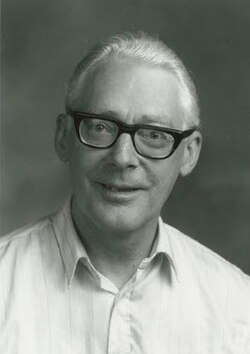

Ole-Johan Dahl | |
|---|---|
 | |
| Born | 12 October 1931 |
| Died | 29 June 2002 (aged 70) Asker, Norway |
| Education | University of Oslo (BS, MS) |
| Known for | Simula Object-oriented programming |
| Awards | Turing Award (2001) IEEE John von Neumann Medal (2002) |
| Scientific career | |
| Fields | Computer science |
| Institutions | Norwegian Computing Center University of Oslo |
Ole-Johan Dahl (12 October 1931 – 29 June 2002) was a Norwegian computer scientist. Dahl was a professor of computer science at the University of Oslo and is considered to be one of the fathers of Simula and object-oriented programming along with Kristen Nygaard.[1][2] In 2001, Dahl and Nygaard won the ACM Turing Award.
Dahl was born in Mandal, Norway. He was the son of Finn Dahl (1898–1962) and Ingrid Othilie Kathinka Pedersen (1905–80). When he was seven, his family moved to Drammen. When he was thirteen, the whole family fled to Sweden during the German occupation of Norway in World War II. After the war's end, Dahl studied numerical mathematics at the University of Oslo.[1]
Dahl became a full professor at the University of Oslo in 1968 and was a gifted teacher as well as researcher. Here he worked on Hierarchical Program Structures, probably his most influential publication, which appeared co-authored with C.A.R. Hoare in the influential book Structured Programming of 1972 by Dahl, Edsger Dijkstra, and Hoare, perhaps the best-known academic book concerning software in the 1970s. As his career advanced, Dahl grew increasingly interested in the use of formal methods, to rigorously reason about object-orientation for example. His expertise ranged from the practical application of ideas to their formal mathematical underpinning to ensure the validity of the approach.[3]
Dahl is widely accepted as Norway's foremost computer scientist. With Kristen Nygaard, he produced the initial ideas for object-oriented (OO) programming in the 1960s at the Norwegian Computing Center (Norsk Regnesentral (NR)) as part of the Simula I (1961–1965) and Simula 67 (1965–1968) simulation programming languages, which began as an extended variant and superset of ALGOL 60.[4] Dahl and Nygaard were the first to develop the concepts of class, subclass (allowing implicit information hiding), inheritance, dynamic object creation, etc., all important aspects of the OO paradigm. An object is a self-contained component (with a data structure and associated procedures or methods) in a software system. These are combined to form a complete system. The object-oriented approach is now pervasive in modern software development, including widely used imperative programming languages such as C++ and Java.
He received the Turing Award for his work in 2001 (with Kristen Nygaard). He received the 2002 Institute of Electrical and Electronics Engineers (IEEE) John von Neumann Medal (with Kristen Nygaard)[5] and was named Commander of the Royal Norwegian Order of St. Olav in 2000.[6]
The Association Internationale pour les Technologies Objets named the Dahl-Nygaard Prize after Dahl.[7]
{kind=link}